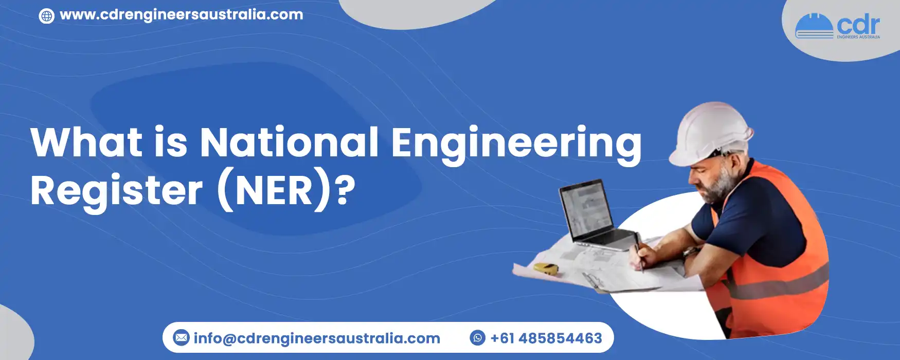

What is National Engineering Register (NER)?
Table Of Content
- What is National Engineering Register (NER)?
- Requirements to join NER Australia
- Costs Involved for NER Engineers Australia
- Areas of the practice of NER
- Who is Eligible for National Engineering Registration?
- Why Register on National Engineering Register (NER)?
- Time Required for NER Processing
- Privacy Policy About NER
Engineers Australia established the National Engineering Register (NER) in 2015 to recognize highly skilled, qualified, competent, and professional engineers. This initiative provides an excellent opportunity for engineers to advance their careers. The NER allows those in Australia’s engineering industry to showcase their skills and experience to potential employers too. This is a useful means for engineers who want to advance in their careers.
Requirements to join NER Australia
There are 5 things to consider to fulfil the requirements for joining NER Australia. They are
- Work Experience Statement
- CPD
- Professional Referee
- PII
- Interview
1. Work Experience Statement
Your work experience statement should demonstrate your skills, knowledge, and capabilities to Engineers Australia. Your work experience statement should be well written. Work Experience Statement should show exact specifications to Engineers Australia as it plays an important role in assessment.
2. CPD
Candidates must provide evidence of their commitment to CPD over the past three years, which should total 150 hours. Maintaining your CPD ensures that your NER credentials remain valid.
3. Professional Referee
Engineers must select two Professional Referees who can verify the statements they have made in their application to NER. These Referees can be supervisors, mentors, senior colleagues, or engineering clients who have known the engineer for at least a year. They should have an engineering degree and a minimum of 5 years of experience in the engineering field.
4. PII
When applying for the National Engineering Register, applicants must meet the requirements of the PI insurance benefit and provide information on PII.
5. Interview
An interview with the applicant is required as the last stage of NER registration. The Professional Referees are also contacted by phone. Engineers who are not members of Engineers Australia must complete an additional step before beginning the five phases of NER registration which can also require qualifications assessment. If you are unsure and need guidance, you can always contact CDR Engineers Australia.
Costs Involved for NER Engineers Australia
| Ner Assessment And Registration Fees | ||||
|---|---|---|---|---|
| Assessment Fee For Initial Application | Assessment Fee For Additional General or Specific Area of Practice | Annual Registration Fee | ||
| EA Chartered Members | $335.50 | Complimentary to 30 June 2018 | $97.00 from 1 July 2019 | |
| EA Chartered members (Chartered gained after 2 November 2015) | $335.50 | The fee includes NER registration fee for the balance of the current EA membership subscription year in which Chartered is gained | $97.00 | |
| EA Non-Chartered Members | $335.50 | $335.50 | The fee includes NER registration fee for the balance of the current EA membership subscription year | $97.00 |
| Non EA Members | $555.50 | $555.50 | The fee includes NER registration fee for the balance of the current EA membership subscription year | $167 |
Areas of the practice of NER
The National Engineering Register is intended to recognize qualified professionals who have demonstrated a high level of competence and significant experience in nineteen different areas of engineering. These include:
- Mechanical Engineering
- Aerospace Engineering
- Biomedical Engineering
- Civil Engineering
- Electrical Engineering
- Chemical Engineering
- Environmental Engineering
- Structural Engineering
- Information, Telecommunications, and Electronics Engineering
Who is Eligible for National Engineering Registration?
- EA members from any occupational category can apply for NER, but you must have at least 5 years of engineering experience within the last 7 years.
- Engineers Australia Chartered Members are also eligible to apply for NER.
- To apply for NER, non-members of Engineers Australia must pass an assessment and provide CPD statements that can be verified during the interview. While providing engineering services, the candidate should also have and maintain PII insurance. Applicants whose universities are not members of Engineers Australia must submit a Competency Demonstration Report.
Why Register on National Engineering Register (NER)?
The National Engineering Register (NER) is a valuable platform for Australian employers looking to hire qualified engineers, allowing employers to find the best-suited engineer for their organisation. This register also allows engineers to demonstrate their skills and experience to potential employers, as well as their credentials as trusted professionals in the engineering field. Engineers in Australia can gain recognition in their industry and make themselves more visible to employers by being listed on the NER. Note: Anyone can choose to de-register from the NER (National Engineering Register) at any time by sending a written notice to the Member Services Team at MemberServices@engineersaustralia.org.au expressing their reason for cancelling registration.
Time Required for NER Processing
The application evaluation process typically takes three to four weeks to complete. If the reviewers need to request additional paperwork, the timeline may be extended. Engineers Australia has assembled a panel of highly qualified and experienced individuals who have also undergone extensive training to ensure they make informed and impartial decisions.
Privacy Policy About NER
Engineers Australia may disclose sensitive information about you to a membership committee, board, or panel to evaluate applications and investigate complaints. This information can also be shared with members of judging committees. For migration-related matters, the information can be shared with the Department of Immigration and Citizenship and Australian Education International for migration statistical reports.
Conclusion
If you’re looking forward to registering in NER, we can help you with guidance. Our professional writers can also assist you in writing Work Experience Statement and CPD which plays a crucial role when it comes to assessing your application by Engineers Australia. We not only assist with the NER process, but we also offer CDR Report Writing, Career Episode, ACS RPL Report Writing, and other services. Hire us now and fulfil your dream and career as an engineer today!